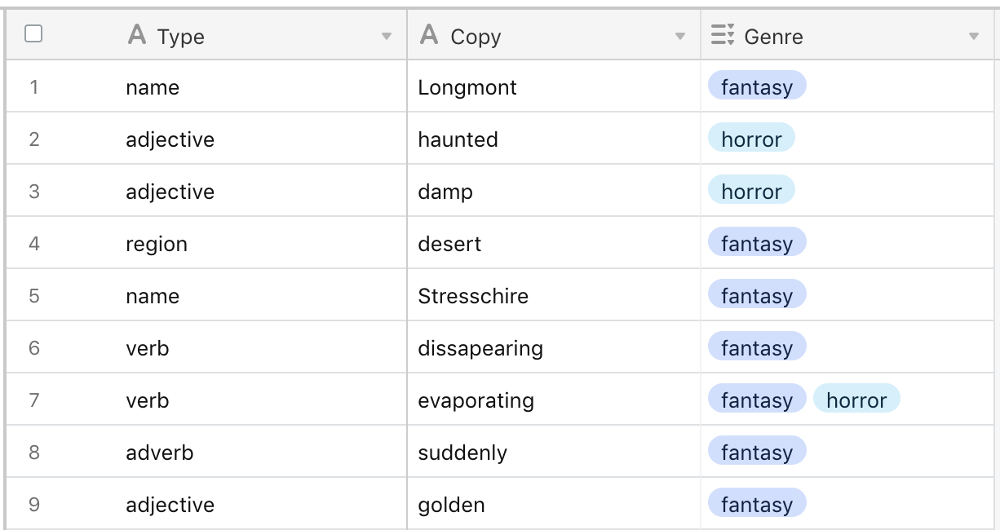

Assignment #7 - Text Generators
Our homework assignment is to create a website which creates dynamic text that updates each time the page is reloaded. You could use your text generator to create any kind of text (poems, stories, fake bands) as long as at least three elements of the text change on each update - try out changing names, verbs, nouns, and descriptions.
For example, I created a page that generates Castle Descriptions each time the page is reloaded.
Use Airtable to store the different text you would like to use as sources, and use Array functions like Map, Filter, and Sort to organize and randomly select items from your data.
Use Airtable to create a database with at least three fields - for example, my database contains three fields Type, Copy, and Genre which I use to filter by Type, and optionally use Genre secondarily to determine if it's going to be a 'Horror Story' castle or a 'Fantasy' castle.

Example Airtable Database
If you haven't already, you will need to generate your Airtable Api Key ( see: How do I get my API Key? ) to use your own Databases.
You will also need to find the URL of your new base. You can review my demonstration on APIs & Databases ( skip to 12:13 ), or review How to find your Airtable Base Url.
Resources
- In-Class Demonstration - Javascript: Working with Data ( Part 1 )
- Recorded Demonstration - Javascript: Working with Data ( Part 2 )
- Working with Data In-Class Demonstration ( Github Pages )
- Working with Data In-Class Demonstration ( Codebase )
- JavaScript Higher Order Functions ( Map, Sort, Filter ) & Arrays - Traversy Media
- How To Use .map() to Iterate Through Array Items in JavaScript - Digital Ocean
- Using JavaScript's sort Method for Sorting Arrays of Numbers - Digital Ocean
- How To Use the filter() Array Method in JavaScript - Digital Ocean
- Creating Elements - MDN
- Adding Elements to DOM ( 'Appending' Elements ) - MDN